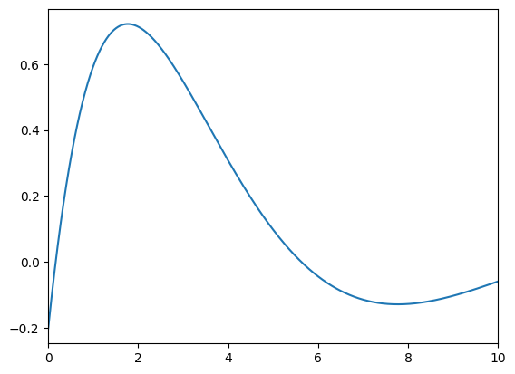

3.8. Solving the curlcurl eigenvalue problem using explicit methods#
by M. Wess, 2025#
This Notebook is part of the dualcellspaces documentation for the addon package implementing the Dual Cell method in NGSolve, as well as part of the td_evp documentation on the implementation of time-domain methods for resonance problems.
We show how to numerically solve the Maxwell eigenvalue problem combining dualcellspaces package with the ideas from
[1] L. Nannen and M. Wess, A Krylov Eigenvalue Solver Based on Filtered Time Domain Solutions, arXiv prepreint, 2024, https://doi.org/10.48550/arXiv.2402.08515.
Moreover we compare the time domain method to LOBPCG.
Problem setting#
We want to approximate the eigenvectors and eigenfunctions of the problem to find \(\tilde\omega\in\mathbb R, E\in H(\mathrm{curl})(\Omega)\) for some domain \(\Omega\subset\mathbb R^3\) such that
with natural boundary conditions.
Setting up the discrete Problem#
We start by doing the necessary imports
from ngsolve import *
import dualcellspaces as dcs
from ngsolve.webgui import Draw
import numpy as np
from netgen.occ import *
import matplotlib.pyplot as pl
import scipy.linalg as spl
from ngsolve.solvers import LOBPCG
---------------------------------------------------------------------------
ModuleNotFoundError Traceback (most recent call last)
Input In [1], in <cell line: 2>()
1 from ngsolve import *
----> 2 import dualcellspaces as dcs
3 from ngsolve.webgui import Draw
4 import numpy as np
ModuleNotFoundError: No module named 'dualcellspaces'
maxh = 1
order = 2
lx = ly = lz = np.pi
geo = OCCGeometry(Box((0,0,0),(lx,ly,lz)))
mesh = Mesh(geo.GenerateMesh(maxh=maxh))
Draw(mesh)
WebGLScene
fes_E = dcs.HCurlDualCells3D(mesh, order=order)
fes_H = dcs.HCurlPrimalCells3D(mesh,order=order)
fes = fes_E*fes_H
print("total DoFs:",fes.ndof)
print("DoFs E:",fes_E.ndof)
gf = GridFunction(fes)
gfE, gfH = gf.components
#integral symbols with special integration rules
dxE = dx(intrules=fes_E.GetIntegrationRules())
dxH = dx(intrules=fes_H.GetIntegrationRules())
dxw = dx(intrules=dcs.GetIntegrationRules(2*order+4))
dSw = dx(element_boundary=True,intrules=dcs.GetIntegrationRules(2*order+4))
#mixed bilinear form
E,dE = fes_E.TnT()
H,dH = fes_H.TnT()
normal = specialcf.normal(3)
Curl = BilinearForm(E*curl(dH)*dxw+E*Cross(dH,normal)*dSw, geom_free=True).Assemble().mat
SetHeapSize(int(2e9))
#prepare mass operators
with TaskManager():
massH_inv = fes_H.Mass(1).Inverse()
massE = fes_E.Mass(1)
massE_inv = fes_E.Mass(1).Inverse(freedofs=fes_E.FreeDofs())
total DoFs: 101256
DoFs E: 51552
Solving the problem with LOBPCG#
To use LOBPCG we need to deal with the kernel of the \(\mathrm{curl}\)-operator. The dualcellspaces package provides the fitting \(H^1\)-space and \(\nabla\)-operator respecting the discrete exact sequence properties.
fespot = fes_E.GetPotentialSpace()
phi, dphi = fespot.TnT()
Grad = BilinearForm(grad(phi)*dE*dxE).Assemble()
gmat = Grad.mat.DeleteZeroElements(1e-12)
massPot = BilinearForm(phi*dphi*dxw, diagonal=True).Assemble()
with TaskManager():
massPot_inv = massPot.mat.Inverse()
ccdd = Curl.T @ massH_inv @ Curl + 5000*gmat@massPot_inv@gmat.CreateTranspose()
Now we solve the stabilized problem using LOBPCG. As a preconditioner we just use the inverse of the \(E\)-mass matrix, which leads to very slow convergence. Thus we cheat a little by setting the initial vectors to projections of analytical eigenfunctions.
nevs = 5
initvecs = GridFunction(fes_E,multidim=nevs)
for i in range(nevs):
initvecs.vecs[i].SetRandom()
initvecs.vecs[0].data = massE_inv*LinearForm(dE*CF((sin(x)*cos(y),-cos(x)*sin(y),0))*dxE).Assemble().vec
initvecs.vecs[1].data = massE_inv*LinearForm(dE*CF((0,sin(y)*cos(z),-cos(y)*sin(z)))*dxE).Assemble().vec
initvecs.vecs[2].data = massE_inv*LinearForm(dE*CF((sin(x)*cos(z),0,-cos(x)*sin(z)))*dxE).Assemble().vec
initvecs.vecs[3].data = massE_inv*LinearForm(dE*CF((2*sin(x)*cos(y)*cos(z),-cos(x)*sin(y)*cos(z),-cos(x)*cos(y)*sin(z)))*dxE).Assemble().vec
ccdd = Curl.T @ massH_inv @ Curl + 5000*gmat@massPot_inv@gmat.CreateTranspose()
with TaskManager():
lams,vecs = LOBPCG(ccdd, massE, pre=massE_inv, maxit=100, initial = initvecs.vecs,
printrates = True)
print("approximated evs: ",lams)
0 : [33.4046934272116, 36.016233488457196, 38.934276532741016, 66.62630888011739, 1120107.5100885816]
1 : [15.129668363772145, 15.91062363889624, 17.773121821658947, 29.141884505280924, 714288.618884463]
2 : [8.318941291968114, 8.889993152757068, 10.28936609942856, 15.898130640533306, 554305.1737834862]
3 : [5.375921047123504, 5.604648829583592, 6.425176869746773, 9.970062049516736, 460884.1107982093]
4 : [3.8519466102527344, 4.027587570510584, 4.461493387167848, 6.935792184815598, 395344.2231369249]
5 : [3.056800820153552, 3.2266388728540236, 3.438113717094799, 5.269733923989201, 345038.5953065827]
6 : [2.641177127595946, 2.762298271633232, 2.8645422066960378, 4.404423101909524, 301633.1707222996]
7 : [2.3989129224111814, 2.4875835072079937, 2.5448688525065117, 3.8861253064302916, 261203.47106939484]
8 : [2.2598162102439, 2.325987520962622, 2.3598986182173753, 3.5920854456131037, 222239.1205222841]
9 : [2.1766983391253927, 2.219592734737207, 2.2452715956686258, 3.402899773163022, 186222.36859163982]
10 : [2.1225810571587735, 2.150342059700878, 2.16971552008854, 3.271318161644471, 155178.55656127442]
11 : [2.0862284382188325, 2.1051739143503383, 2.1197680825413827, 3.1863964929149673, 128744.35646649494]
12 : [2.062556022665444, 2.0748350202339383, 2.087853058479919, 3.1335872698391536, 105678.12802543404]
13 : [2.045266858413697, 2.054267498076364, 2.065313855781533, 3.0959529878807417, 85259.9125969833]
14 : [2.0329383202221702, 2.0400158283732974, 2.0490816025490477, 3.0696494836599237, 68376.53221914973]
15 : [2.024219948149963, 2.029685293139157, 2.037105857340414, 3.052001612617796, 54896.967868709246]
16 : [2.0180637979999867, 2.0223922808891155, 2.0281969382494, 3.0398139278342304, 43855.33864454605]
17 : [2.0137760479786655, 2.01723528735614, 2.0216851824896698, 3.031028763367404, 35284.08233968771]
18 : [2.0105241678043346, 2.0135231673400593, 2.0169072672708945, 3.0240150382809987, 28530.838620236857]
19 : [2.008181613094173, 2.010790429847021, 2.0134069296564037, 3.019045439822392, 23185.04290807495]
20 : [2.006484809622441, 2.0085903350372716, 2.0107475357684366, 3.015323902919438, 18851.2153420419]
21 : [2.0051403210888648, 2.0068915652519936, 2.008630369101492, 3.012376850784282, 15290.918197082423]
22 : [2.0041028464685464, 2.005547526130091, 2.0069373204185346, 3.010010132843305, 12480.021895849903]
23 : [2.00330293430977, 2.004490410987834, 2.005655906231633, 3.008087955104796, 10248.907339403271]
24 : [2.0026927987013616, 2.0036871300617123, 2.0046425371846843, 3.0066274004612104, 8441.009833830822]
25 : [2.0022332147015196, 2.0030560692250745, 2.0038215195567455, 3.0055147730650487, 6978.020587227072]
26 : [2.0018666576110133, 2.0025409818414777, 2.003187031002934, 3.0046085786740155, 5823.4820098627615]
27 : [2.001574330559419, 2.002124562924381, 2.0026909326104465, 3.0038742792233024, 4878.897004254168]
28 : [2.001337022127864, 2.001787934879262, 2.00229233445937, 3.0032856935509247, 4145.681973461229]
29 : [2.001143557820933, 2.0015240363129245, 2.0019682972235806, 3.0028372135016026, 3553.612265233911]
30 : [2.0009877014466446, 2.001311709566733, 2.0016998894960576, 3.0024709565081373, 3041.0122658201853]
31 : [2.0008588015891866, 2.0011501198536004, 2.0014793676807825, 3.0021841871820736, 2635.2548691127445]
32 : [2.000753125890598, 2.0010200228182042, 2.001298483943412, 3.001945374839615, 2318.098816885043]
33 : [2.0006650578741842, 2.0009169531851727, 2.00115882063818, 3.0017521578968074, 2049.2894243432147]
34 : [2.000593112192904, 2.0008298375119415, 2.001038734500219, 3.0015929540084785, 1827.914540789716]
35 : [2.0005350290281423, 2.0007591029500107, 2.0009373610960175, 3.001457297722976, 1645.3024614854846]
36 : [2.000487220283549, 2.0006986971356513, 2.000853747184057, 3.001345082169523, 1497.4897384548017]
37 : [2.0004490207315233, 2.0006504658898088, 2.000784742413596, 3.0012554041310633, 1372.4946109458276]
38 : [2.000416843900822, 2.000609085286606, 2.0007254894708515, 3.001174433811686, 1271.6992774775554]
39 : [2.0003902817885573, 2.0005757762448875, 2.000676244914107, 3.00110176879061, 1190.8795647201732]
40 : [2.0003678640935108, 2.0005469638815905, 2.000633475536693, 3.0010378247920566, 1123.0767930789557]
41 : [2.000349363197556, 2.0005220624156865, 2.000597234546209, 3.0009837965717274, 1066.6377517748874]
42 : [2.0003340159463883, 2.0005009695860463, 2.000565891321176, 3.0009381176799157, 1019.7744886790277]
43 : [2.0003199358555577, 2.0004828321113073, 2.0005395183685337, 3.000897937972813, 980.8138366623615]
44 : [2.000307878042494, 2.000467591537245, 2.0005190306747074, 3.0008626775805896, 949.6215771492773]
45 : [2.000297010872398, 2.0004535544306625, 2.0005011749339676, 3.0008306210986193, 923.8529518910318]
46 : [2.000287662961243, 2.0004411964556046, 2.000485707318107, 3.00080246645773, 902.4381330625268]
47 : [2.0002798277673217, 2.0004308009354674, 2.0004726224628295, 3.000778264710036, 882.706821487928]
48 : [2.0002726948917746, 2.0004214997854497, 2.0004613115070713, 3.000756548528884, 866.0559314236676]
49 : [2.0002662937412, 2.000413442822161, 2.0004513208192405, 3.0007378808217116, 851.7782415228623]
50 : [2.0002605935045765, 2.000406190931854, 2.000442206960346, 3.000721055410739, 839.7763070665403]
51 : [2.0002556018423414, 2.0003997433734226, 2.000434370931056, 3.000706838808165, 829.4598813687776]
52 : [2.0002513112069398, 2.0003943226864918, 2.000427801341864, 3.0006946690274203, 820.4402124387497]
53 : [2.000247524032957, 2.0003894059036367, 2.0004218373532674, 3.000684204326541, 812.5111491925585]
54 : [2.0002442632546034, 2.000384981130813, 2.0004167499634917, 3.000674936048189, 805.862241894297]
55 : [2.0002414852052928, 2.000381216018863, 2.0004122318491167, 3.0006665963128234, 800.115626130387]
56 : [2.0002390177998746, 2.0003778898380395, 2.000408090865052, 3.0006592166595327, 794.8978554481874]
57 : [2.000236879637675, 2.0003748824775074, 2.0004043883718996, 3.0006528582782455, 790.4610854804871]
58 : [2.000235031841959, 2.000372166340931, 2.0004010615781898, 3.00064717344069, 786.5410813100094]
59 : [2.0002334705161124, 2.000369698483525, 2.00039829997145, 3.000641871634183, 782.9124368686278]
60 : [2.0002321702709045, 2.00036747878382, 2.0003960069431024, 3.0006374775405025, 779.5434722961143]
61 : [2.000231020838397, 2.00036551783431, 2.000393904792533, 3.000633623799545, 776.4105378969924]
62 : [2.0002299692645686, 2.0003637733058537, 2.000392047309108, 3.000630301209353, 773.5162299604948]
63 : [2.000229064502144, 2.0003622058432935, 2.000390388698692, 3.0006274527447196, 770.8797201242919]
64 : [2.0002282787338217, 2.0003607477386547, 2.0003889285954957, 3.0006248604190637, 768.3426977647376]
65 : [2.0002276277509417, 2.000359413110489, 2.0003875782761424, 3.000622456952281, 765.9692741583118]
66 : [2.000227075620331, 2.000358144109588, 2.000386301956103, 3.0006201886765163, 763.752080929924]
67 : [2.0002265616016013, 2.00035697835312, 2.0003851156294505, 3.0006182383127045, 761.5742363650645]
68 : [2.0002261182716694, 2.000355889378277, 2.0003840570392213, 3.0006164942495452, 759.4559214668042]
69 : [2.000225727787882, 2.0003548686846795, 2.0003831031891837, 3.000614947367414, 757.5492202542755]
70 : [2.000225362837617, 2.000353959790407, 2.000382243377845, 3.0006135855654774, 755.7581800445915]
71 : [2.000225024074378, 2.000353089712959, 2.0003814324552547, 3.000612271443248, 753.9003162759888]
72 : [2.000224716348025, 2.000352309311608, 2.0003806969257525, 3.0006110185860626, 752.1246146147895]
73 : [2.0002244334282135, 2.0003515688362055, 2.0003800174646953, 3.0006099417282974, 750.3643178029474]
74 : [2.0002241601467334, 2.000350892932999, 2.000379387176216, 3.000608934308108, 748.6303159475392]
75 : [2.000223905948033, 2.0003502424053443, 2.0003787823308494, 3.000607955577748, 746.9116464662121]
76 : [2.0002236632903694, 2.000349609762937, 2.0003782076775742, 3.0006070255093484, 745.1644518316281]
77 : [2.0002234178216476, 2.0003490044867935, 2.0003776545120284, 3.0006061543128317, 743.419666734744]
78 : [2.0002231836039543, 2.000348427203462, 2.0003771759544073, 3.0006053542784956, 741.6988902673996]
79 : [2.0002229544225973, 2.00034787382109, 2.0003767226511227, 3.000604610178415, 739.9446671680066]
80 : [2.0002227218636666, 2.0003473600039006, 2.000376270230027, 3.0006038424554267, 738.160169619959]
81 : [2.0002224933922377, 2.0003468724239513, 2.000375833000672, 3.0006030986619985, 736.4309675049188]
82 : [2.0002222504593674, 2.000346364613891, 2.000375352738382, 3.000602327819733, 734.6083386821027]
83 : [2.000222003005119, 2.000345916090265, 2.0003749349439643, 3.0006016408460034, 732.8138423713949]
84 : [2.000221762064265, 2.000345428751397, 2.0003744820278944, 3.0006009926836357, 730.99830615221]
85 : [2.000221510079862, 2.0003449681405288, 2.0003740546374984, 3.00060032615484, 729.1622019867872]
86 : [2.000221244862281, 2.0003445181138053, 2.000373617250416, 3.000599642370176, 727.2797674208207]
87 : [2.0002209839119405, 2.0003440696728942, 2.000373200342435, 3.0005989504298305, 725.334038934107]
88 : [2.0002207235306066, 2.000343602605211, 2.000372793418275, 3.000598228564904, 723.3144519107042]
89 : [2.0002204620612916, 2.0003431450731934, 2.0003723517404706, 3.000597507378188, 721.2846431008613]
90 : [2.000220178411047, 2.0003426607699666, 2.000371890161228, 3.0005967809489853, 719.2144062867942]
91 : [2.0002198690533004, 2.0003422145686884, 2.000371445993996, 3.0005959980163293, 717.0398640974927]
92 : [2.0002195529947477, 2.000341748503211, 2.0003709674132426, 3.0005951682446197, 714.7184054979869]
93 : [2.0002192262272644, 2.00034127854328, 2.0003704932248607, 3.000594317806239, 712.2246454796382]
94 : [2.000218897128247, 2.0003408166099983, 2.0003700005958054, 3.0005935062903455, 709.8511940394262]
95 : [2.0002185231261906, 2.0003403577317274, 2.000369502690209, 3.0005926110029146, 707.3998740787197]
96 : [2.0002181439105806, 2.0003398188207946, 2.0003690039401403, 3.0005916840744757, 704.7069009223255]
97 : [2.000217768664801, 2.0003392890899727, 2.0003684527253114, 3.000590735108298, 701.8524248702878]
98 : [2.000217373346022, 2.0003387685564626, 2.0003678698418113, 3.0005897145653875, 698.8828693017289]
99 : [2.00021694994676, 2.0003382369725022, 2.000367271446994, 3.000588621296573, 695.862594190043]
approximated evs: 2.00022
2.00034
2.00037
3.00059
695.863
The filtered problem#
The idea from [1] in short is to use the solution of the time-domain Maxwell problem
To define the filtered operator \(\tilde \Pi_\alpha\) by $\( (\tilde \Pi_{\alpha} E^0)(x) = \int_0^\infty e(t,x)\alpha(t)dt \)\( for some weight function \)\alpha\( with final support in \)\mathbb R$.
It can be shown that for an eigenpair \((\tilde\omega, E)\) of the Maxwell eigenvalue problem \((\beta(\tilde\omega),E)\) is an eigenpair of \(\Pi_\alpha\) for
Discretizations#
The same arguments hold true if we replace the continuous problem by the discrete eigenvalue problem
where \(\mathbf S,\mathbf M\) are the discretization of the \(\mathrm {curl}\mathrm {curl}\) and the mass matrix and \(\mathbf E\) is the coefficient vector of the discrete eigenfunctions.
Discretizing the semi-discrete time domain problem by a time-stepping and the integral by a trapezoidal rule leads to the discrete filter
where \(\mathbf e^j\) is the time-domain solution at time step number \(j\).
Then if \(\omega,\mathbf E\) is an eigenpair of the discrete problem \((\beta(\omega),\mathbf E)\) is an eigenpair of the operator \(\Pi_\alpha\) with $\( \beta(s):= \tau \sum_{j=0}^M \lambda_j(s)\alpha(\tau j) \)\( and \)\lambda_j\( is the approximation of the scalar problem \)\( \partial_t^2 l(t)+s^2 l(t)=0,\quad l(0) = 1 \)$ by the chosen time-stepping.
Choosing the filter and solving the problem#
The idea is now to choose the weight function \(\alpha\) such that the resulting filter \(\beta\) is maximal in a region where the sought after eigenvalues are and close to zero otherwise. Then applying e.g., an Arnoldi algorithm to the filtered operator \(\Pi_\alpha\) will yield approximations to the eigenfunctions where \(\beta\) is maximal, which we know to be eigenvectors of the original problems corresponding to eigenvalues in the interesting region. Lastly we solve the original problem projected onto the space spanned by the Krylov space of \(\Pi_\alpha\).
We define the filtered operator as a class. Since we use a mixed method for the spacial discretization we need to supply the (inverse) mass matrices for the two fieds, as well as the discrete curl operator and the parameters for the time-discretization and filtering.
class FilteredC(BaseMatrix):
def __init__(self, mata, matm_inv, tau, weights, freedofs = None):
super().__init__()
self.dt = tau
self.weights = weights
self.nsteps = len(weights)
self.mata = mata
self.matm_inv = matm_inv
self.freedofs=freedofs
self.vecu = self.mata.CreateColVector()
self.tmpvec1 = self.mata.CreateColVector()
self.tmpvec2 = self.mata.CreateColVector()
def CreateColVector(self):
return self.mata.CreateColVector()
def Shape(self):
return self.mata.shape
def CreateVector(self,col):
return self.mata.CreateVector(col)
def Mult(self,rhs,out):
with TaskManager():
self.vecu.data = rhs
tau = self.dt
out.data = tau*self.weights[0]*self.vecu
t = 0
unew = self.tmpvec1
uold = self.tmpvec2
uold.data = self.vecu
for i in range(1,self.nsteps):
t += tau
#print("\r time = {}, step = {}".format(t,i),end="")
unew.data = 2*self.vecu - uold
unew.data -= tau**2 * self.matm_inv@self.mata * self.vecu
if self.freedofs:
unew.data[~self.freedofs] = 0.
uold.data = self.vecu
self.vecu.data = unew.data
out.data += tau*self.weights[i]*self.vecu
To obtain a stable method we need to respect the CFL condition of the time-domain problem. Thus we apply a simple power iteration to determine the largest magnitude eigenvalue of the discrete problem:
massinv = massE_inv
mass = massE
stiffness = Curl.T@massH_inv@Curl
tol = 1e-4
tmpv = stiffness.CreateVector()
tmpv2 = stiffness.CreateVector()
tmpv.SetRandom()
tmpv /= tmpv.Norm()
mus = [1]
for i in range(500):
#print("i = {}".format(i))
tmpv2.data = tmpv
tmpv.data = massinv@stiffness*tmpv2
mu = InnerProduct(tmpv2,tmpv)/InnerProduct(tmpv2,tmpv2)
tmpv /= tmpv.Norm()
mus.append(mu)
if mus[-1]/mus[-2]<1+tol:
break
lammax = mus[-1]*(1+tol*200) #some safety factors
print("estimated largest eigenvalue: ",lammax)
tau = np.sqrt(4/lammax)
print("by power iteration stable for tau = {}".format(tau))
estimated largest eigenvalue: 8332.166952253809
by power iteration stable for tau = 0.02191043570892399
Next we need to pick suitable parameters for the time-domain filtering. We look for eigenvalues \(\lambda\in[1,3]\) and plot the resulting discrete filter.
# parameters for the filter function
lam_min = 1
lam_max = 3
endT = 3
L = int(endT/tau)
w_min = np.sqrt(lam_min)
w_max = np.sqrt(lam_max)
weightf = lambda t: 4/np.pi*np.cos((w_max+w_min)/2*t)*(w_max-w_min)/2*np.sinc((w_max-w_min)/2*t/np.pi)
weights = weightf(tau*np.arange(L))
def beta(lam):
if np.isscalar(lam):
q = 1
else:
q = np.ones(lam.shape)
q_old = q
out = tau*weights[0]*q
for alpha in weights[1:]:
q_new = 2*q-tau**2*lam*q-q_old
q_old = q
q = q_new
out += tau*alpha*q
return out
betas = beta(np.arange(0,20,0.01))
pl.figure()
pl.plot(omegas,betas);
pl.xlim((0,10))
(0.0, 10.0)

maxsteps = 20
C = FilteredC(stiffness,massinv,tau,weights)
solveevery = 1
tmpvec = massinv.CreateVector()
tmpvec.SetRandom()
tmpvec.data = 1/tmpvec.Norm()*tmpvec
tmpvec2 = massinv.CreateVector()
vecs = MultiVector(tmpvec,0)
vecs.Append(tmpvec)
for i in range(maxsteps):
print("\n Krylowstep = {}".format(i))
tmpvec.data = C*vecs[-1]
vecs.AppendOrthogonalize(tmpvec)
if i%solveevery == 0:
tvecs = MultiVector(tmpvec,len(vecs))
tvecs.data = stiffness*vecs
tvecs2 = MultiVector(tmpvec,len(vecs))
tvecs2.data = mass*vecs
matm_proj = InnerProduct(tvecs2,vecs)
mats_proj = InnerProduct(tvecs,vecs)
lam,v = spl.eigh(mats_proj.NumPy(),matm_proj.NumPy())
#compute residuals
eigf =(vecs*Matrix(v.real)).Evaluate()
res = []
tmpvec2[:] = 0
for i in range(len(lam)):
tmpvec2.data = massinv@stiffness*eigf[i]
tmpvec2.data -= lam[i]*eigf[i]
res.append(tmpvec2.Norm()/eigf[i].Norm())
print("approximated eigenvalues: ", lam)
print("residuals: ",res)
Krylowstep = 0
Krylowstep = 1
Krylowstep = 2
Krylowstep = 3
Krylowstep = 4
Krylowstep = 5
Krylowstep = 6
Krylowstep = 7
Krylowstep = 8
Krylowstep = 9
Krylowstep = 10
Krylowstep = 11
Krylowstep = 12
Krylowstep = 13
Krylowstep = 14
Krylowstep = 15
Krylowstep = 16
Krylowstep = 17
Krylowstep = 18
Krylowstep = 19
approximated eigenvalues: [-2.31937008e-14 2.00012552e+00 2.00018279e+00 2.00020235e+00
3.00032534e+00 3.00039426e+00 5.00149581e+00 6.09205541e+00
8.00403142e+00 9.00678423e+00 1.06354292e+01 1.39605119e+01
1.42052547e+01 1.96488328e+01 2.55175163e+01 3.69844306e+01
7.02764349e+01 1.28545191e+02 3.13037437e+02 6.76016298e+02
9.80999056e+02]
residuals: [2.1989909295670403e-09, 0.00019775980295800953, 0.0013192117691427378, 0.0005301841411562754, 3.5258010954220083e-08, 3.6911969388271684e-08, 0.007333758719569671, 15.43501053185778, 0.001703512655918669, 0.01461423689933618, 13.416289340398531, 9.509263003677018, 21.45026708395035, 22.769888149236436, 41.87503783028204, 54.632969339110524, 99.51215975055842, 173.6201359122568, 363.30281797204856, 622.4249669263492, 922.4808415865533]